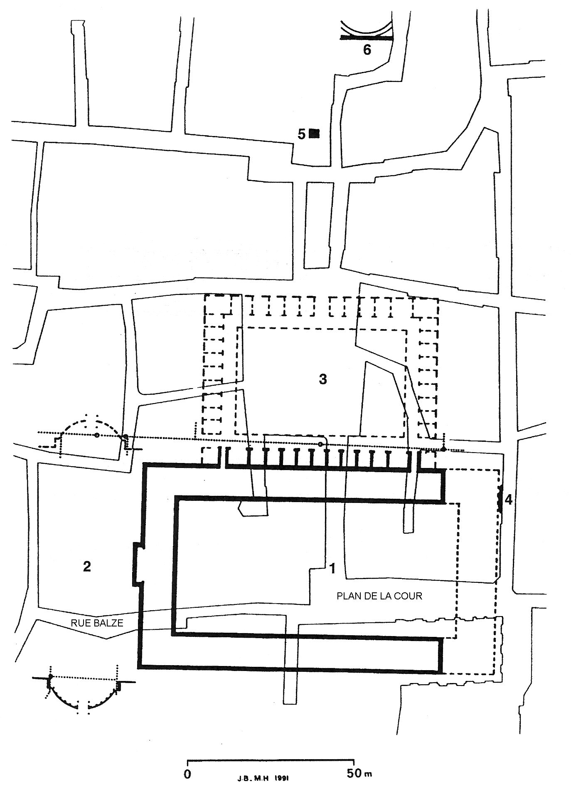

De middeleeuwse stad: opbloei of heropbloei?

Introductie
Eén van de belangrijkste discussiepunten is nog altijd of het Middeleeuwse stedelijke leven het gevolg is van een autonome ontwikkeling binnen de Germaanse koninkrijken, of het direct of indirect werd beïnvloed door de resten van het stedelijke leven dat binnen de grenzen van het Romeinse Rijk had gebloeid.
In de eerste eeuwen van onze tijdrekening was West-Europa opgenomen in de Middellandse Zeewereld. Vanuit Italië had Rome alle gebieden veroverd en verenigd, waar al eeuwen steden bloeiden (a common life for a noble end - Aristoteles) of waar kiemen voor een urbane beschaving tot ontwikkeling waren gekomen (zoals Zuid- en Midden-Gallië). Enkel de natuurlijke gesteldheid (woestijn ten zuiden van het Atlasgebergte) of verzet van de inheemse bevolking (Germanië) hadden daaraan een grens gesteld, zowel aan het Romeinse Rijk als aan de uitbreiding van het stedelijke levenspatroon. Volgens Aristoteles (in zijn werk Politica) is de mens een politikon zoon; hij is een schepsel, een levend wezen, voorbestemd om in de stad te leven. De Griekse filosoof leefde in een tijd dat de Griekse polismaatschappij over haar hoogtepunt heen was en deel ging uitmaken van het Macedonische wereldrijk. Toch hadden de voorbije eeuwen volgens hem bewezen dat echte beschaving enkel te bereiken is in een samenleving met stedelijk leven.
In de Oudheid waren de steden centra van bestuur. Zij droegen de hellenistische cultuur en het Romeinse politieke gezag. De stad vormde het antwoord op de behoeften van de heersende klasse: militaire, politieke, economische. Ze was een machtsconcentratie - alleen langs die weg konden stabiele machtsposities worden opgebouwd - en kon zowel tot laatste verdedigingslinie dienen als tot steunpunt voor verdere veroveringen. Polis is stad, politeia is (een stad) besturen, politiek bedrijven. Ook het religieuze aspect is nauw hiermee verbonden: de augures die de site van een kolonie afbakenen, de tempels voor de goden die de stad beschermen (Parthenon, gewijd aan Athena). Offeren is het bestendigen van de bestaande orde, weigeren te offeren een revolutionaire daad.
Economisch gezien is de stad resultante van veilige voedselvoorziening, demografische groei en specialisatie. Arbeidsverdeling verhoogt de productiviteit, maar is eveneens begrensd door de afzetmogelijkheden op de markt. De grotere productie moet een afzet vinden, m.a.w. moet beantwoorden aan de behoeften van anderen, waardoor in ruil de eigen behoeften worden bevredigd.
De stad controleerde het omliggende platteland, dat moest instaan voor een continue voedselaanvoer, en organiseerde de distributie (marktfunctie) aan het niet-agrarische deel van de bevolking (krijgers, ambachtslui, handelaars, kunstenaars). De aanwezigheid van handelaars en ambachtslui verzekerde de elite van grootgrondbezitters van de aanvoer van weeldeartikelen en van dagelijkse gebruiksvoorwerpen (keramiek, wapens). De stad zorgde voor intensieve grondbewerking (irrigatie, ontginning, betere methoden, nieuwe gewassen).
De laat-Romeinse civitas: transformatie of achteruitgang?
Hebben de steden de romanisatie in hoge mate bevorderd, hun achteruitgang is het ontegensprekelijk bewijs van de diepgaande veranderingen die de laat-antieke wereld schokten. Het uitzicht van de steden in de laatste eeuwen van het klassieke tijdvak (kleinere oppervlakten, ommuurde vestingen) wijst erop dat noch de aristocratische bovenlaag, die de nodige geldmiddelen bezat, noch het op andere grondslagen gevestigde keizerlijke bewind, eraan dachten de steden in hun vroegere vorm te herstellen. Reeds vanaf de 2de eeuw maakten de rijkste grootgrondbezitters (de potentes, de principales viri in de bronnen), dank zij hun politieke relaties, hun domeinen los uit het stedelijk fiscaal territorium en gingen niet meer voorop in investeringen voor het uitbreiden en onderhouden van de infrastructuur (openbare gebouwen, wegen, bruggen, aquaducten). Die last viel op de schouders van de overgebleven grondbezitters, die ook verantwoordelijk waren voor de inning en het doorsluizen van de altijd hogere belastingen die Rome oplegde. Hogere uitgaven, lagere inkomsten, verrast het dan nog dat de bouwactiviteit, de belangrijkste nijverheidstak , een sterke terugval kende?
Over de inkrimping van de antieke steden als symptoom van de economische achteruitgang is al veel inkt gevloeid. Volgens de gangbare opinie wijst het optrekken van muren rond de stadscentra met behulp van steenblokken van vroegere openbare gebouwen op een paniekreactie en op armoede, terwijl anderen er juist een bewijs in zien van economische en mentale veerkracht. Veralgemeningen zijn uit den boze. Het zou verkeerd zijn om de in de vorige paragraaf beschreven evolutie gelijk te stellen met een feodalisering zoals later in de Europese Middeleeuwen. De grootgrondbezitters bleven in de stad resideren. Maar het initiatief voor grote bouwwerken ging nu meer uit van de centrale staat (tot in de vierde eeuw) en later van de kerk (vanaf de vijfde eeuw). Tijdens het dominaat, door de groeiende decentralisatie en de flexibelere rijksverdediging, bloeiden nieuwe keizerlijke hoofdsteden zoals Ravenna, Milaan, Trier en Arles, naast metropolen zoals Vienne, Bordeaux, Sevilla, York en Toulouse. De belangrijkste steden bezaten nog hogescholen, want het bureaucratische, keizerlijke bewind kende een hoge vraag naar geschoolde ambtenaren. Vooral de inmenging van de kerk zou bepalend blijken voor de metamorfose die de laat-antieke steden ondergingen. Voor de Zuid-Franse stad Arles hebben we deze evolutie goed kunnen documenteren. Het dient gezegd dat de stad zelf daarvoor grote interesse betoont.
Topic: Arles in de laat-antieke periode.
Eind augustus 2008, tijdens de Romeinse dagen in Arles, hadden we een ontmoeting met archeoloog Marc Heijmans die al jaren in de stad actief is. Zijn rondleiding gaf ons meer inzicht in de continuïteit en in de discontinuïteit van het Romeinse stratenplan.
Bijgaande figuur projecteert de omtrekken van het forum (1) en van het plein (3) juist ten noorden ervan (macellum?) op de huidige stadsplattegrond. Zes meter boven het antieke niveau vormen de Plan-de-la-Cour (waar in de Middeleeuwen de stedelijke magistraten hun rechtszittingen hielden), de Rue du Palais die dit pleintje verbindt met de Place du Forum (voorheen Place Saint-Lucien, genoemd naar een nu verdwenen kerk) en de westwaarts lopende Rue Balze de enige overgebleven open ruimte. Ook een tweede forum (2) met twee halfronde uiteinden (exedra's) bevindt zich onder de gebouwen van het vroegere Jezuïetencollege en een ander huizenblok ten noorden van de Rue Balze, maar is gedeeltelijk blootgelegd. In de late Oudheid gaf een ambitieus bouwprogramma de wijk ten noorden van het forum een ander uitzicht. Daarvan getuigen nog de twee zuilen in de gevel van het Hôtel du Forum, de thermen van Constantijn (6) en de onder de bar van het hotel Arlaten teruggevonden resten van een keizerlijke aula, met het nodige voorbehoud gedateerd einde vierde - begin vijfde eeuw (5).

Vanaf de vijfde eeuw raakt het forum van Arles bezaaid met parasitaire bouwwerken (encroachment). Het plein, of wat er nog van overbleef, verloor definitief zijn openbaar karakter, toen de bouw van de absis van de Saint-Lucienkerk in de tiende eeuw de laatste toegang afsloot (de rechtse opening op de noordelijke arm van de cryptoportieken; enkel een steegje, genoemd naar de uit Arelate afkomstige Griekstalige filosoof en schrijver Favorinus, geeft een aanwijzing van de ligging van de opening en van de kerk). De straat die ten zuidoosten van het forum met de twee exedra's liep, werd opgehoogd. In het amfitheater komt een hele wijk tot stand (zoals in het theater van Orange). Soms vinden merkwaardige verschuivingen plaats. Opgravingen onder het schip van de Saint-Trophime hebben de steunmuren van een esplanade aangetoond. Bij de oprichting van de obelisk op de Place de la République in de 17de eeuw legden de werkzaamheden sporen van thermen bloot (bevestigd door noodopgravingen bij de renovatie van de Caisse d'Epargne). De uitbreiding van de kerk in westelijke richting heeft dus een antiek plein doen verdwijnen, terwijl de thermen ten westen van dit plein verdwenen en later plaats maakten voor een modern plein.
In zijn rondleiding bevestigde Marc Heijmans dat de vijfde eeuw in schril contrast staat met de vierde. Terwijl het christelijke keizerlijke bewind ernaar streefde om het klassieke uitzicht van de stad te bewaren, traden in de chaotische tijden van de Volksverhuizingen de bisschoppen sterk naar voor en startten hun eigen bouwprogramma's. De kerk heroriënteerde de geldstromen van de rijken naar de liefdadigheid, maar hield de beslissing rond de besteding en de verdeling ervan uitsluitend in handen van de geestelijkheid. De kerk monopoliseerde zo de middelen voor kerkenbouw en armenzorg. Dit verklaart de verwaarlozing van andere stadsgedeelten die te sterk met het heidense verleden waren verbonden: forum, theater, tempels,...
Het zou dus fout zijn de oppervlakte binnen de laat-antieke muren gelijk te stellen met de bewoonde oppervlakte. Extra-muros konden nog handelswijken liggen. Toch tonen de cijfers bij de steden (eerst de oppervlakte in de eerste en tweede eeuw, daarna die uit de laat-antieke tijd) voldoende de schokken in het stedelijke leven aan. De berekeningen komen uit literatuur of zijn zelf berekend aan de hand van stadsplattegronden. De vermelde oppervlakten zijn intra-muros.
| Nîmes | 200 | 30 |
| Amiens | 105 | 10 |
| Bavai | 40 | 4 |
| Vienne | 300 | 36 |
| Tours | 80 | 16 |
| Tongeren | 120 | 40 |
Topic: Tongeren, civitas in Germania inferior.
Als stad kwam Tongeren tot ontplooiing vanaf de Flavische dynastie, toen de Rijngrens definitief was gestabiliseerd. Ze was het verzorgingscentrum van de Haspengouwse villa's. In tegenstelling tot de Maasvallei verder stroomafwaarts trof de Romeinse overheid maatregelen voor een systematische kolonisatie van deze vruchtbare landbouwstreek.
De verdeling in centuries heeft nog zijn sporen in het huidig landschap. Rijke grafgiften in tumuli wijzen op de welstand van deze Gallo-Romeinse hereboeren. De muur van 4.544 meter omsloot een oppervlakte van 120 ha, waarvan 3/4 werkelijk bewoond was.
In de minder dicht bewoonde gedeelten lagen de ambachtelijke kwartieren. De Jeker stroomde binnen de muren, zodat opslagplaatsen, werkhuizen (leerbewerking, pottenbakkerijen) en kaden voor de aanvoer van bouwmateriaal zich in alle veiligheid bevonden. Aan de noordelijke zijde lag een grote tempel. In het centrum, onder de huidige basiliek, lag een monumentaal gebouw (overdekte markt en gerechtszaal die later aan de christelijke eredienst werd gewijd?).
Het Romeinse Tongeren bezat ook thermen. Even buiten de muren, waar de wegen naar Cassel, Bavai en Aarlen samenkwamen, lagen graanopslagplaatsen. Dit wijst op een productieoverschot dat de overheid opkocht om de Rijnlegioenen te fourageren. Buiten de magazijnen (horrea) bevatte het complex een kantoor van de staatspost (cursus publicus), logement voor reizende ambtenaren (mansio) en een afspanning (mutatio = wisselen der rijdieren). Het complex viel onder de bevoegdheid van de provinciegouverneur, bijgestaan door de praefectus annonae.
De invallen van 257 en 275/76 richtten veel schade aan. Vele landbouwbedrijven in Haspengouw werden vernield en/of definitief opgegeven. De villabewoners trokken naar de stad die zich op een kleinere oppervlakte ommuurde (2.680 meter en 40 ha).
De Jeker vloeide nu geheel extra muros, maar de archeologen hebben wel sporen van muren teruggevonden die de nieuwe omwalling verbonden met de Jeker.
Tot 375 bleef Tongeren een vrij dichtbevolkt en welvarend centrum. Het herstel van de Rijngrens, de nabijheid van Trier - keizerlijke hoofdstad - en de kolonisering van Germaanse laeti, waardoor een aantal domeinen opnieuw bewoond waren, hebben daartoe zeker bijgedragen. De Germaanse kolonisten moesten ook bijdragen tot de rijksverdediging. Na nieuwe invallen in 352-355 zette de achteruitgang werkelijk in. Deze evolutie blijkt uit muntvondsten: 73 % van de weergevonden munten uit de laat-Romeinse periode dateren van de periode 308-361. Na het wegtrekken van de geregelde troepen door Theodosius in 378/79 (om de Visigotische crisis te bezweren), het verplaatsen van de hoofdstad van Trier naar Arles en het definitief opgeven van de Rijngrens (begin 5de eeuw) trok de bevolking weg (doorlopende plundertochten).
Opgravingen (1997-2013) op de site van de Onze-Lieve-Vrouwbasiliek, nu toegankelijk via het Teseum, hebben dit beeld enigszins bijgesteld. Na de brand rond 285 die in verband zou kunnen gebracht worden met de invallen van de Franken, bouwde men in de oostelijke hoek van de nieuwe stadsomwalling een basiliek. Het is niet duidelijk of dit bouwwerk eerst een publiekrechterlijk karakter vertoonde (overdekte markt en gerechtszaal) en daarna een religieus (kerk), of het van in het begin een kerkelijke functie had. In elk geval werd in de zesde eeuw binnen de omtrek van de basiliek een Merovingische kerk gebouwd (17,5 x 12,4 meter). Was de kerk door de geringe afmetingen een gedenkplaats? Een satelietkerk van Maastricht? Vanaf het einde van de zesde eeuw ontstaat een nieuw kerkhof rond de kerk, een aanwijzing voor een nederzetting, zodat we kunnen aannemen dat er minstens een klein dorp de bewoningsfunctie van het vroegere Atuatuca Tungrorum voortzette. Ook de Romeinse begraafplaatsen aan de rand van de oude stad bleven tot de zevende eeuw in gebruik. Ergens in de negende eeuw, tijdens de Karolingische periode, maakten ze aanstalten om de kerk te herbouwen, maar ten slotte werd op het einde van de eeuw een grotere kerk gebouwd op dezelfde site. Of dit te maken had met de stichting van een kapittel is onzeker, omdat de eerste, zekere schriftelijke bron van het kapittel pas dateert uit 967. Het is echter wel aannemelijk dat het einde van de Vikingincursies (880-890) de plaatselijke elite van grootgrondbezitters ertoe heeft aangezet om een kapittel te stichten in samenwerking met de bisschop.
Literatuur:
- W. Vanvinckenroye, Tongeren - Romeinse stad, Lannoo, 1985
- P. De Rynck, Tongeren. De basiliek en het Teseum, OKV, 2016
- A. Vanderhoeven en A. Ervynck (red.), Relicta Monografieën 14, Het archeologisch en bouwhistorisch onderzoek van de O.L.V.-basiliek van Tongeren (1997-2013) Deel 4: De laat-Romeinse en vroegmiddeleeuwse periode, agentschap Onroerend Erfgoed (OE), 2018
Het continuïteitsvraagstuk en de Zwarte Laag
Engelse archeologen die op het einde van de jaren '70 de continuïteit onderzochten tusen Romeinse steden en hun middeleeuwse opvolgers, troffen dikwijls een homogeen humusrijk pakket donkere aarde aan die ze Black of Dark Earth noemden. Eerst dachten ze dat die laag het bewijs was van de inkrimping van antieke steden, van een scherpe bevolkingsafname en van een verregaande ruralisering. Totdat ze bodemmonsters onder de microscoop legden en bleek dat ze op die manier nog heel wat resten van vegetatie (wild, akkergewassen, weiden), van houten woningen en andere gebouwen en van gestort huishoudelijk afval konden identificeren. Samenwerking met exacte wetenschappen was hiervoor nodig: bodemkunde, fysico-chemie, archeobotanie, archeozoölogie, studie van pollen en fytolieten (versteende platenresten die een indicatie kunnen geven welke vegetatie er in een bepaalde periode op die plaats groeide, terwijl het organische materiaal van de planten al lang vergaan is). In de jaren '80 zouden ook Italiaanse archeologen de techniek omarmen en in de jaren '90 ook de Franse die de lagen terres noires noemden. Sinds een tiental jaar zijn ook Belgische archeologen op de kar sprongen: zij gebruiken de benaming zwarte lagen. Voor deze paragraaf hebben we de masterscriptie van Barbora Wouters aan de VUB geraadpleegd. Ze leerde de onderzoekstechniek bij Yannick Devos (CreA, Centre de Recherches Archéologiques, ULB) en tijdens een verblijf aan de universiteit van Sheffield. In 2017 doctoreerde ze over hetzelfde onderwerp (universiteiten VUB en Aberdeen).
Uit de nieuw verworven inzichten komt naar voor dat we voor de vroege Middeleeuwen met een andere bril dienen te kijken naar het continuïteitsvraagstuk. Ook in vroegere werken worstelden de auteurs met de vraag hoe we de restanten van stedelijk leven in West-Europa in de overgangsperiode tussen Oudheid en Middeleeuwen dienden te typeren. Barbora Wouters stelt zelfs in haar masterscriptie het hele begrip overgangsfase in vraag (n. 14 p.22). In zijn gids Retrouver Lugdunum schrijft Amable Audin, eerste conservator van het Gallo-Romeinse museum van Fourvière (nu Lugdunum geheten): (nadat de verwoesting van de aquaducten de heuvel onbewoonbaar maakte) wat overleeft langs de oevers van de twee rivieren, is zeker niet meer Lugdunum, en het is nog niet Lyon.
. Leonardo Benevolo (De Europese Stad p.32) vat het continuïteitsvraagstuk zo samen: Het in vergelijking met andere facetten van het stedelijke leven duurzame karakter van de fysieke uitrusting van de stad (openbare gebouwen) creëerde het anachronisme van een maatschappij die het materiële omhulsel van een andere, verdwenen samenleving bewoonde, waarmee ze op technisch, noch op intellectueel gebied kon wedijveren.
Frans Verhaeghe, professor-emiritus aan de VUB, plaatste in het archeologische tijdschriftScarabee nr. 29/augustus 1997, voortgezet als Archeologie magazine, vraagtekens bij de vieringen van steden met Romeinse wortels. Volstaan een aantal artefacten in de bodem om met veel bravoure een tweeduizendste verjaardag te vieren? En zelfs wanneer vroeger op het grondgebied van je stad een heuse civitas huisde, mag je dan spreken van 2000 jaar X (een goede verstaander leest hier Tongeren), in de wetenschap dat misschien gedurende eeuwen er een onderbreking van bewoning was? Recente opgravingen hebben intussen wel aangetoond dat er veel meer bewoning was in Tongeren in de vroege Middeleeuwen dan eertijds werd aangenomen (ook nog in W. Vanvinckenroye,Tongeren: Romeinse stad, Lannoo, 1985). Barbora Wouters (2011, p. 93) stelt: Een Romeins precedent kan dan wel oriënterend werken voor de inplanting van de vroegmiddeleeuwse bewoning, maar deze periode bezit een geheel eigen dynamiek en gedachtegoed. Een stedelijke ruimte van de 6de -7de eeuw of later heeft bijgevolg alleen indirect (topografisch of ideologisch) nog te maken met de Romeinse stad die er aan voorafging.
In een artikel uit 2005 p. 265, in: Charlemagne, Empire and Society, Story, J. (ed.), Manchester University Press, p. 259-288, Urban developments in the age of Charlemagne, vertaalt F. Verhaeghe een citaat van de Franse archeoloog H. Galinié: "… towns without urban life, at least urban life as we normally understand it". Dit doet denken aan de uitspraak in Star Trek: It's life, Jim, but not as we know it!
In hetzelfde artikel (p.262) stelt hij dat de link met het Romeinse verleden minstens vanaf de Karolingische periode geen drijvende kracht meer was in de stedelijke ontwikkeling. Is het nog wenselijk dat we één ononderbroken continuïteit reconstrueren vanaf de antieke Oudheid over de Laat-Romeinse, Merovingische, Karolingische en Hoog-Middeleeuwse periodes?
In Antwerpen, een archeologische kijk op het onstaan van de stad noteert Tim Bellens: Na het imploderen van het Romeinse Rijk raken steden en dorpen in verval, gebouwen en infrastructuur blijven als littekens over in het landschap. De ruïnes van tempels, thermen of militaire forten herinneren aan een roemrijk verleden en figureren in de vroege Middeleeuwen als lieux de mémoire om de legitimiteit van nieuwe gezagsstructuren te versterken. Bisschoppen zetelen op plaatsen die voordien belang en status uitstraalden, zoals bijvoorbeeld in Maastricht,...
(Bellens, 2020, p. 80) Trouwens Antwerpen is een goed voorbeeld om onze nieuwe inzichten over stadsontwikkeling te toetsen: een Gallo-Romeinse nederzetting, die haar hoogtepunt kende in de tweede helft van de tweede eeuw tot het midden van de derde, met sporen tot in de vierde, een uit de heiligenlevens (vitae) van Eligius en Amandus en uit muntvondsten gekende Merovingische nederzetting, waarvan tot op heden nog geen archeologische relicten zijn gevonden, een intermezzo waarin de Scheldevikingen, de Scaldingi, een belangrijke rol spelen en daarna een portus die samen met de later door de Ottoonse keizers opgerichte burcht de kern zal vormen van de stad Antwerpen.
Continuïteitsfactoren
Op onze oude webpagina hadden wij het continuïteitsprobleem ook al verder ontleed in zogenaamde continuïteitsfactoren: continuïteit in naam (toponymie), in bewoning (waren de overblijvende bevolkingskernen binnen de te ruime laat-Romeinse muren echter een teken van levende urbaniteit??), in plattegrond (topografisch argument) en in bestuursinstellingen (de bisschop zorgde voor continuïteit van bestuur in de laat-Romeinse civitas, maar dit bestuur droeg een heel ander karakter).
Eén van de meest in het oog springende topografische bijzonderheden is het verdwijnen, in Gallië en in Spanje, van het forum. Als symbolen van de Romeinse macht overleefden de fora de ondergang van het Rijk niet; in vele steden zijn ze ontmanteld en daarna volgebouwd. We hebben dit tijdens onze bezoeken aan Bavay, Vienne, Orange, Vaison-la-Romaine, Nîmes en Arles zelf kunnen vaststellen. Voor Spanje geeft het artikel van Emmanuelle Boube, La mort lente du forum dans les villes des provinces hispaniques à la fin de l’Antiquité ou le symbole d’une société en cours de profonde mutation in: Alain Bouet ed. Le forum en Gaule et dans les régions voisines, p. 335-406, Ausonius Editions, Bordeaux, 2012, een grondige bespreking met synoptische tabel op p. 387.
Hoewel ook in Zuid-Europa (Italië, Iberische schiereiland, Zuid-Frankrijk) steden uit de Oudheid verdwenen, bleef een directe band voortbestaan met de Oudheid; deze streken waren trouwens zeer vroeg geromaniseerd en hun kusten waren het voorwerp geweest van Fenicische en Griekse kolonisatie. De bisschoppen resideerden in de steden. Hun rol was vooraanstaand, omdat de rol van de antieke stadsraad van grondbezitters was uitgespeeld. De Italiaanse adel participeerde reeds vroeg in de handel. In de stadsplattegronden van steden zoals Florence, Pisa, Lucca, Bologna en Verona vinden we het dambordpatroon van de oorspronkelijke Romeinse kolonies terug. De fora in die steden waren ook in de Middeleeuwen en zijn zelfs nu het hart van het commerciële leven. In Spanje zorgde de Arabische overheersing voor continuïteit: Cordoba, Sevilla.
In het gebied tussen Seine en Rijn, een overgangsgebied, overleefden meestal kleine, versterkte plaatsen, gemakkelijk te verdedigen, gelegen aan waterlopen (het vervoer verliep praktischer dan via de slecht onderhouden, overwoekerde heirwegen). Ze deelden later in de algemene heropleving van de handel: Parijs, Metz, Toul, Verdun, Namen, Dinant, Hoei, Doornik.
Soms was er enkel continuïteit van naam, zoals Utrecht (Trajectum) en Nijmegen (Ulpia Noviomagus).
Wanneer het Romeinse gezag verdween, bleef nog enkel de rol als bisschopszetel over. Te Trier, in de 4de eeuw een stad met 60.000 inwoners en een oppervlakte van 285 ha, overleefden nog twee kleine woonkernen: die van de Frankische graaf en die van de bisschop. Toen de Noormannen in 882 de stad aanvielen en verwoestten besloten de overlevenden om bij de heropbouw het antieke stratenplan definitief de rug toe te keren.
Zelfs de vroegere hoofdstad Rome bestond uit spaarzame bevolkingskernen die verspreid lagen over het reusachtige gebied dat omsloten was door de Aureliaanse muren. De verstoorde drinkwatervoorziening dwong de resterende bevolking zich te vestigen tussen het Capitool en de Tiberoever, waar sinds een ver verleden de markten lagen. Tussen de Aventijn en het Capitool woonden Byzantijnen, op de Esquilijn waren Gotische soldaten gelegerd (een feit dat voorleeft in de naam van de kerk S. Agata dei Goti) en op de site rond de Vaticaanse heuvel woonden er Franken, Saksen en Longobarden. De pausen ommuurden deze nederzetting (borgo) na de plundering door de Saracenen in 846. Het Forum Romanum verviel tot een wei.
Het is eveneens opvallend dat vele, versterkte steden in het laat-Romeinse Rijk hun vroegere benaming terug opnamen. Tours aan de Loire (Caesarodunum of heuvel van Caesar) trok zich terug op de heuvel, waar de arena lag . Resten van de Gallo-Romeinse muur zijn nog steeds te bezichtigen. De civitas hernam de naam van de Keltische stam die er bij Caesars verovering woonde, de Turones. Parijs herinnert aan de Parisii, Reims is de stad van de Remi en niet meer Durocortorum, Bourges (Avaricum) die van de Bituriges, Augustoritum wordt Limoges naar de Lemovices.
De macht van de bisschop, een hernieuwde gemeenschapszin onder de stedelingen en een voortschrijdende kerstening van het maatschappelijke leven kenmerkten de laat-antieke civitas. Het stedelijk leven concentreerde zich rond het bisschoppelijk centrum (basiliek, doopkapel, ambtswoning, kathedraalschool) en verliet het oude centrum rond het forum, dat model stond voor het voorbije heidense verleden. Theaters geraakten in onbruik wegens de immoreel geachte voorstellingen en de affiniteiten met de heidense eredienst (Dionysius) en de keizerscultus. De gewelddadige spelen in de arena's en circussen werden afgeschaft. Tempels werden gesloten, omgevormd in musea of in spaarzame gevallen in kerken. Thermen dienden eveneens gemeden (bovendien waren die afhankelijk van de wateraanvoer door aquaducten, die wegens het erin verwerkte metaal en de grote rol die ze speelden in de drinkwatervoorziening - zie Lugdunum -, het slachtoffer werden van vernieling). De traditionele opvoeding in de gymnasia (opleiding tot burger) overleefde niet in een op autoriteit gestoelde politieke (dominaat), intellectuele (meer nadruk op innerlijke geloofsbeleving) en religieuze omgeving.
In het Westen, met de achteruitgang van de keizerlijke macht, verdween de noodzaak om ambtenaren op te leiden, de belangrijkste bestaansreden van de stedelijke retorenscholen. Na 420-430 horen we niets meer van de scholen in de Gallische steden Lyon, Arles, Narbonne, Toulouse en Bordeaux.
Andere factoren in de vorming van de Middeleeuwse stad
Graven van heiligen, martelaren en bisschoppen vormden ook kristallisatiepunten in de vorming van de Middeleeuwse stad. De begraafplaatsen lagen, zoals de Romeinse wet het wilde, in necropolen buiten de stadsmuren. De voortdurende verering leidde tot de bouw van kerken. Zo komt het dat kerken die nu in volle stadsdrukte liggen nog de benaming 'fuori le mura, hors les murs, buiten de muren' dragen, zoals de S. Paolo fuori le mura te Rome en de Saint-Pierre hors les murs te Vienne. De Duitse stad Xanten ontstond rond het graf (ad Sanctos) van de heilige Victor, terwijl de Romeinse Colonia Trajana (voorheen oppidum van de Cugerni) nooit meer bebouwd werd, wat een geluk betekende voor de archeologen - blootlegging amfitheater.
De band tussen de heilige Martinus en de stad Tours is hier exemplarisch. Deze heilige was eerst soldaat in het Romeinse leger. Op een dag deelde hij zijn mantel met een bedelaar. Kort daarna liet hij zich dopen, ging in de leer bij Hilarius van Poitiers en stichtte als monnik het oudste klooster van Gallië te Ligugé, later dat van Marmoutiers (monasterium Martini) bij Tours. In 372 vroegen de Turones hem als bisschop. Op krachtdadige wijze bestreed hij het heidendom op het platteland. Hij stierf in 397. De monniken van Marmoutiers begroeven hem buiten de muren van de civitas. In 471 bouwde men een basiliek rond het graf, waar in 496 of 497 Clovis beloofde zich te laten dopen als hij de overwinning op de Alemannen behaalt. De Gallo-Romeinse schrijver Gregorius van Tours, bisschop in 573, breidde het religieuze complex uit met een abdij. Na Sulpicius Severus' (360 - 420) Vita Martini, schreef ook hij vier boeken over de mirakels van de heilige, wat leidde tot een grote toevloed van pelgrims. Op het einde van de 8ste eeuw groeide de abdij onder impuls van Alcuin van York uit tot een intellectueel en artistiek centrum. Na plunderingen van de Noormannen werd de abdij ommuurd en een nederzetting (bourg) groeide in haar nabijheid: Châteauneuf of Martinopolis, het huidige Vieux-Tours. Pas in 1354 zou een nieuwe omwalling zowel de Civitas als de Bourg omsluiten.
Dezelfde tweepolige stadsgroei (enerzijds een ommuurde laat-Romeinse civitas, later bisschopszetel, in het Frans cité, en anderzijds een oorspronkelijk niet-ommuurde nederzetting rond een klooster of burcht, burgus, in het Frans bourg) vinden we terug in Limoges (de bourg groeide er tussen de burcht van de burggraaf en de abdij rond het graf van de heilige Martialis), Clermont-Ferrand, Périgueux, Rodez ('la Place de la Cité' en 'la Place du Bourg', nauwelijks 250 meter van elkaar verwijderd, herinneren aan de eeuwenlange machtsstrijd tussen bisschoppen en graven) en Narbonne.
De toevloed van pelgrims naar een aloud bedevaartsoord (Sint-Gummarus te Lier, Sint-Lambertus te Luik, Saint-Germain te Auxerre, Saint-Martin te Tours,...) of van studenten naar een klooster- of kathedraalschool (Chartres, Parijs, Orléans, Auxerre, Luik, Sint-Truiden) zorgde voor de bouw van kerken, onderkomens, herbergen en trok bovendien dienstverlenende beroepen aan (bakkers, slagers, barbiers, kleermakers, geldwisselaars, ...). In Zuidwest-Frankrijk vormden pleisterplaatsen naar Santiago de Compostela kernen van nieuw stedelijk leven: Conques, Cahors.
Bij vele steden hebben meerdere oorzaken samengewerkt. Bovendien heeft elke stad haar eigen geschiedenis en is een algemene theorie over het ontstaan van de stad onmogelijk samen te stellen.
De volgende stap in de ontwikkeling was de ommuring, waardoor de oorspronkelijke vestiging (suburbium bij burcht of klooster) en de koopmansnederzetting (portus) één geheel gingen vormen, met één rechtsstatuut. Daardoor nam de stad een uitzonderingspositie in. Ondanks controle door ambtenaren van de heer (schout, baljuw) regeerden de stadsbewoners zichzelf. Deze onafhankelijkheidsdrang kwam soms tot uiting in de commune, een soort eedgenootschap.
Verschillende factoren konden dus leiden tot de vorming van een stad en dit valt dikwijls af te leiden uit de verschillende vestigingskernen: te Gent het Gravensteen, burcht (castrum) van de graaf, met een ambachtskwartier waar vooral leerbewerkers voor de burchtbewoners werkten (Cordewanierstraat) als suburbium, een koopmansnederzetting (portus) aan de overzijde van de Leie en vestigingen bij de Sint-Pieters- en Sint-Baafsabdij. In het begin van de 12de eeuw omvatte de eerste omwalling de portus met predikherenklooster, markten (vis- en koren-), schepenhuis, lakenhalle, belfort, kerken en open terreinen, waaraan de namen Kouter en Veldstraat herinneren. De uitbreiding van Gent maakte in de 13de-14de eeuw een tweede omwalling noodzakelijk die nu ook de twee begijnhoven, het hospitaal en de twee abdijen omsloot.
Ook Brugge heeft zijn ontstaan te danken aan een grafelijke burcht (einde 9de eeuw) met kerk, rechtszaal en magazijnen en aan de nabijheid van de zee via het Zwin. In Parijs zijn drie kernen: een eiland (Ile de la Cité) in de Seine met koninklijk paleis en kathedraal, de handelsnederzetting op de rechteroever (rive droite) en het cultureel centrum (Quartier latin) met de Sorbonne op de linkeroever (rive gauche). Hoewel de drie kernen al in de 12de eeuw in één ommuring werden omvat, hebben zij tot vandaag hun eigen karakter bewaard.
Daarom vormden de stadsbewoners qua afkomst een heterogeen geheel: kooplui, ministerialen (vazallen, vaak van onvrije afkomst, die de heer hielpen met bestuurstaken), oorspronkelijke grondbezitters (de 'erfachtige lieden' te Gent), boeren, ambachtslui uit het suburbium of ingeweken vanuit het platteland (Stadslucht maakt vrij), vissers, schippers, geestelijken, ...
De feodale heren zagen met lede ogen de groeiende onafhankelijkheid aan, maar anderzijds apprecieerden zij de groeiende inkomsten uit allerlei rechten, nu de inkomsten uit hun landerijen stagneerden, en de permanente nabijheid van een markt (luxeartikelen). Stadsrechten omschreven de relatie tussen de vorst/heer en de stad en haar bewoners. De oudste steden kregen hun privileges beetje bij beetje, nieuwere stichtingen kregen hun rechten ineens, op perkament (keure). Dikwijls werden de stadsrechten van oudere steden als model genomen, zodat historici de verschillende stadsrechten onderverdelen in families.
Bibliografie
- G. Bartelink, De Geboorte van Europa, Coutinho, 1989
- T. Bellens, Antwerpen, een archeologische kijk op het onstaan van de stad, Pandora Publishers, 2020
- L. Benevolo, De Europese Stad, Agon, 1993
- T. Cornell, J. Matthews, Atlas van het Romeinse Rijk, Elsevier,1983 en Agon, 1988, vierde druk
- E. Ennen, De Europese Stad in de Middeleeuwen, Unieboek, 1978
- B. Wouters, Micromorfologisch onderzoek van de zwarte laag te Antwerpen (burchtsite), onuitgegeven masterthesis, VUB, 2012